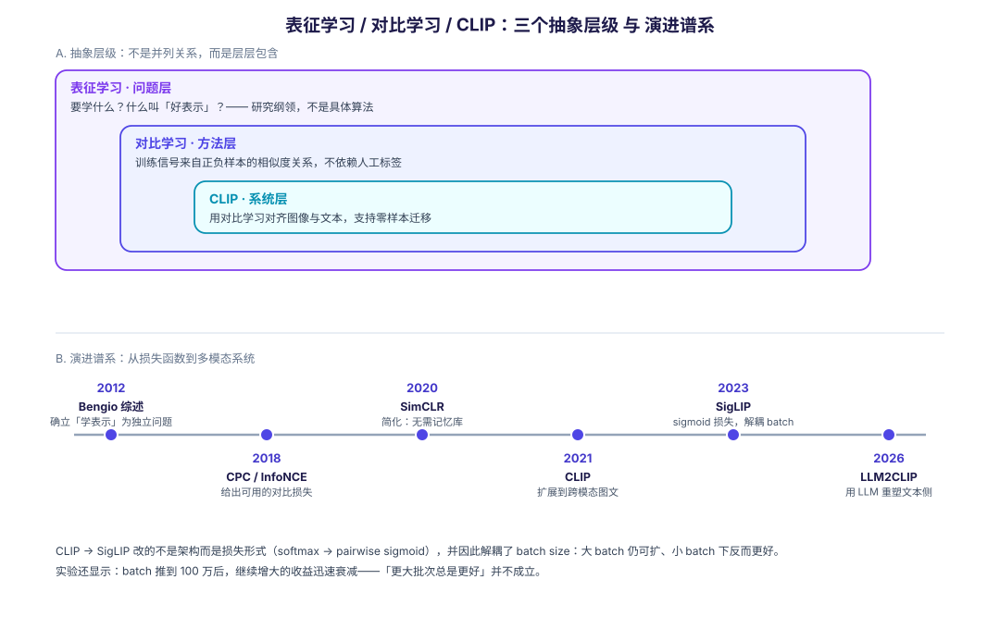

2026-09-16 · Damon + Nemesis · 分类：机器学习 / 表示与多模态 · 标签：表征学习, 对比学习, CLIP, 自监督, InfoNCE, 多模态
一、先给结论：它们不在同一个抽象层
这三个词经常在同一段话里出现，都能被"学习表示"概括，所以最容易被当成三个并列的技术。但它们实际上是三个不同层级的东西：
表征学习 ── 问题层：要学什么？什么叫"好表示"？
│
└── 对比学习 ── 方法层：用正负样本的相似度关系当训练信号
│
└── CLIP ── 系统层：用对比学习把图像与文本对齐成可用系统- 表征学习回答的是目标问题：与其让模型直接拟合最终答案，不如让它先学一份"有用的中间表示"。它是一个研究纲领，不是某个具体算法。
- 对比学习回答的是训练信号从哪来：不依赖人工标签，而是靠"哪些样本应该像、哪些应该不像"来构造损失。它是自监督学习的一个分支，是实现表征学习的一条具体路线。
- CLIP是一个具体系统：用对比学习、以海量网络图文对为监督信号，训练出两个编码器，从而支持零样本视觉任务。
一句话：表征学习是"要什么"，对比学习是"怎么训"，CLIP 是"训出来能干什么"。

二、逐维对比
| 维度 | 表征学习 | 对比学习 | CLIP |
|---|---|---|---|
| 抽象层级 | 问题 / 目标 | 方法 / 训练范式 | 系统 / 模型 |
| 回答什么 | 什么是好表示、怎样评估表示质量 | 训练信号从哪里来、如何构造正负对 | 如何把两个模态对齐并直接使用 |
| 是不是具体算法 | 不是（研究框架） | 是（一族方法） | 是（一个可下载的模型） |
| 监督来源 | 不限：重构、任务损失、对比、生成… | 正负样本关系（可自监督） | 网页图文配对（弱监督，非人工标注） |
| 典型代表 | Bengio 等 2012 综述 | CPC / InfoNCE、SimCLR、MoCo、SupCon | CLIP、SigLIP、LLM2CLIP |
| 输出是什么 | 表示空间本身 | 一个编码器 | 一对可对齐的编码器 + 共享表示空间 |
| 主要评测方式 | 线性探针、迁移性能 | 线性探针、迁移性能 | 零样本分类与检索、图文对齐质量 |
| 失败模式 | 学到与任务无关的不变量 | 表征坍塌、假负例 | 组合性理解弱、对提示词敏感 |
三、三个"同"：为什么它们总被放在一起
3.1 都不把"预测最终答案"当作唯一目标
三者的共同出发点是：直接监督信号（人工标签）是瓶颈。
- 表征学习的论文开篇就是这个判断——"机器学习算法的成功通常取决于数据表示"，不同表示会不同程度地纠缠或隐藏数据背后的解释性因子；
- 对比学习则进一步把监督从"标签"换成"样本之间的关系"，从而摆脱标注；
- CLIP 的动机更具体：当时的视觉系统被训练去预测一组预定义的固定类别，这种受限监督限制了通用性与可用性——要指定任何别的视觉概念，就得再补标注数据。改用原始文本作监督，就打开了一个宽得多的监督来源。
3.2 都用"表示质量"而非"任务精度"衡量成败
三者共享一套评测约定：把学到的编码器冻结，只在表示上训一个简单分类器（线性探针），看它能达到什么效果。SimCLR 的摘要里"线性分类器在自监督表示上达到 76.5% top-1、匹配有监督 ResNet-50"，正是这种评测方式的标准表述。
这意味着评价对象是表示的通用性，而不是某一次任务的调参结果。
3.3 都关心"不变性"——保留什么、丢掉什么
- 表征学习层面：不变性是核心议题，且不是免费的——强制颜色不变，在依赖颜色的任务上就会丢关键信息；
- 对比学习层面：不变性由数据增强定义，增强方式直接决定模型学到什么；
- CLIP 层面：不变性是跨模态的——让"猫的图片"和"猫这个词"靠近。
四、三个"异"：真正容易搞错的地方
4.1 层级不同 → 对比学习不是"另一种表征学习"
这是最主要的一条。人们常把两者对举，好像它们是两种可选方案。实际上对比学习是表征学习的一种实现方式，与它并列的应是"重构式学习（自编码器）""生成式学习"等，而不是表征学习本身。
4.2 监督信号的性质不同 → CLIP 严格说不是"纯自监督"
- 典型的对比学习（SimCLR 一类）用同一张图的不同增强视图构造正对，完全是自监督；
- CLIP 的正对来自网页上真实的图文配对——配对的依据是人类写下的文字，带有自然语言语义。
所以 CLIP 属于弱监督，而非教科书意义上的自监督。这个区别有实际后果：CLIP 继承的是互联网文本里的语义与偏差，而不是纯粹的视觉统计规律。
4.3 目标对象不同 → 单模态 vs 跨模态
| SimCLR 式对比学习 | CLIP | |
|---|---|---|
| 正对来源 | 同一样本的两个增强视图 | 一张图 + 它真实的配文 |
| 学到的空间 | 一个模态的表示空间 | 跨模态共享的表示空间 |
| 负样本 | 批内其他样本 | 批内其他图/文（两个方向都算） |
| 能做什么 | 拿去做下游分类/检测 | 直接做零样本分类：把候选类别写成提示词，看哪个和图片最像 |
CLIP 的对称设计值得一提：一个批次里有 N 个图文对，就得到 N×N 的相似度矩阵——对角线是正对，其余全部是负对；图像→文本与文本→图像两个方向各算一次损失，取平均。这个"无需人工标注就能得到 N²−N 个负样本"的结构，是它能用 4 亿对规模训练的关键。
五、谱系：从损失函数到多模态系统
理解三者关系最直观的方式是看这条时间线：
| 时间 | 工作 | 它贡献了什么 |
|---|---|---|
| 2012 | Bengio, Courville, Vincent《Representation Learning: A Review and New Perspectives》 | 把"学表示"确立为独立问题，梳理无监督特征学习、自编码器、流形学习、深度网络 |
| 2018 | van den Oord 等, CPC / InfoNCE | 给出可用的对比目标：在隐空间预测未来，用负采样使模型可训练。对比学习的损失基础 |
| 2020 | Chen 等, SimCLR | 把对比自监督简化到不需要专门架构或记忆库；证明三件事：增强组合至关重要、表示与损失之间加可学习非线性变换显著提升质量、更大 batch 与更多训练步数都受益 |
| 2021 | Radford 等, CLIP | 把对比学习从单模态扩展到跨模态图文对齐，得到零样本迁移能力 |
| 2023 | Zhai 等, SigLIP | 用成对 sigmoid 损失替代 softmax 归一化的对比损失：不再需要全局相似度视图来归一化，解耦了 batch size 与损失——大 batch 仍可扩、小 batch 下反而更好 |
| 2026 | LLM2CLIP（AAAI 2026 杰出论文） | 用大语言模型重塑跨模态表示学习的文本侧 |
一条值得注意的演进线索
CLIP → SigLIP 的变化不是架构变化，而是损失函数变化：双编码器结构基本保留，核心改动是"要不要用全局归一化"。
这恰好回到对比学习最本质的问题：负样本怎么定义、损失怎么归一化。SigLIP 的实验还给出了一个反直觉结论——把 batch size 推到 100 万后，继续增大 batch 的收益迅速衰减。也就是说"更大批次总是更好"并不成立。
六、常见混淆点清单
| 常见说法 | 问题所在 |
|---|---|
| "对比学习和表征学习是两种方法" | 层级错位。对比学习是表征学习的一种路线，与它并列的是重构式/生成式方法 |
| "CLIP 是自监督学习" | 它用的是人类写下的图文配对，属弱监督；典型自监督用的是样本自身的增强视图 |
| "CLIP 就是一个对比学习算法" | CLIP 是系统（含数据管线、双编码器、提示词模板、零样本用法）；对比学习只是它训练所用的损失范式 |
| "表征学习是深度学习的子集" | 反向也不准确：表征学习是问题设定，深度学习是实现它的主流工具之一，经典方法（PCA、核方法）同样属于表征学习 |
| "学到的不变性越多越好" | 不变性不免费——丢掉的信息可能正是任务需要的（如颜色、纹理） |
| "SigLIP 只是 CLIP 的工程优化" | 它改的是损失形式（softmax → pairwise sigmoid），并因此解耦了 batch size，是训练范式层面的改动 |
七、实践启示
如果你在做检索 / RAG
- 用 CLIP 一类模型做跨模态检索时，记住它的表示空间是弱对齐的：适合粗粒度的"哪张图配这句话"，不适合细粒度属性判断（组合性弱是已知短板）；
- "对比学习"给你的直接工具是相似度 + 温度这套机制，与向量检索里的余弦相似度天然同构——这也是它和 [[raw/human_ai_knowledge/embedding-models-comparison.md]] 里那些 embedding 模型能对话的原因。
如果你在做训练
- 想提高表示质量，优先动数据增强的构造，其次才是模型结构——SimCLR 的三条发现里，增强排第一；
- batch size 与损失形式要一起考虑：SigLIP 的意义就在于让你不再被迫用巨大 batch；
- 小心假负例：批内未配对的样本可能语义等价，会给出错误的排斥信号；多正例设计或标签可以改变训练关系。
如果你在写论文 / 做技术选型
- 说清楚你在哪一层做贡献：改进目标（表征学习层）、改进训练信号（对比学习层）、还是改进系统与数据（CLIP 层）；
- 引用时别把三层混为一谈——"我们用对比学习改进了表征学习"与"我们用 CLIP 提升了零样本精度"是不同量级的声明。
参考来源
- Bengio, Courville, Vincent. Representation Learning: A Review and New Perspectives (2012) — 表征学习作为独立问题的纲领；"不同表示会不同程度地纠缠或隐藏数据的解释性因子"
- van den Oord, Li, Vinyals. Representation Learning with Contrastive Predictive Coding (2018) — CPC 与 InfoNCE 式对比损失：在隐空间预测未来，用负采样保证可训练
- Chen et al. A Simple Framework for Contrastive Learning of Visual Representations (SimCLR, ICML 2020) — 三条关键发现（增强组合、非线性变换、batch 与训练步数）；线性探针 76.5% top-1
- Radford et al. Learning Transferable Visual Models From Natural Language Supervision (CLIP, ICML 2021) — 固定类别监督限制通用性；用原始文本作更宽的监督来源
- Zhai, Mustafa, Kolesnikov, Beyer. Sigmoid Loss for Language Image Pre-Training (SigLIP, 2023) — pairwise sigmoid 损失、无需全局归一化、解耦 batch size、百万级 batch 收益衰减
- OpenAI CLIP 官方仓库 — 模型与接口
说明：本文对 CLIP 训练细节（约 4 亿图文对、N×N 对称交叉熵、温度参数）与 SigLIP 损失形式的描述，来自上述一手论文摘要与公开技术解读的交叉核对；若需引用具体数值到论文，请回到 PDF 正文确认。
元信息
- 生成者：Damon + Nemesis
- 日期：2026-09-16
- 来源：6 条一手来源（Bengio 2012 / CPC 2018 / SimCLR 2020 / CLIP 2021 / SigLIP 2023 / 官方仓库），全部实测 HTTP 200；其中 5 条的摘要经 arXiv API 与 PMLR 正文核验
- 配图：
figures/representation-contrastive-clip.svg（程序化生成） - 关联：progressive-kg 的「表征学习」「对比学习」「CLIP」三个概念节点